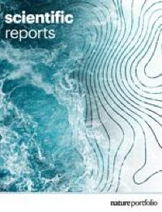
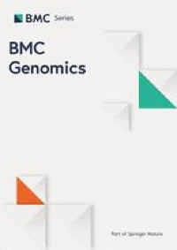

DeepBio Bioinformatics Career Guide
Build Your Bioinformatics Career in the Age of AI
Information accurate as of the session date · Content subject to change.
What we'll cover
Guidance + open Q&A
One ecosystem, one mission
Building the bioinformatics ecosystem in Bangladesh — and connecting it to the world.
DeepBio Limited
A Bangladesh-based research startup turning life-science data into impactful solutions through AI and bioinformatics — spanning research, training, and talent development.
DeepBio Academy
Our bioinformatics training platform — hands-on courses in Python, R, and real-world biological data analysis that take learners from basics to research-ready skills.
CHIRAL Bangladesh
A research organization advancing bioinformatics education and research in Bangladesh through programs, mentorship, and industry collaboration.
An ecosystem for your growth
Research
Genomics, transcriptomics, single-cell, AI in biomedicine.
Academy & Training
Hands-on courses in Python, R, and real-world data analysis.
Internships
GSA Bioinformatics Internship — mentored research to publication.
Career Guide
This free monthly session — industry + academic pathways.
Diseases we study
Where our computational biology makes an impact.
Cancer Genomics
Tumor profiling, driver mutations, and biomarker discovery.
Neurogenomics
Genomic basis of brain function and neurological disease.
Infectious Diseases
Pathogen genomics & surveillance for public health.
Technologies we work with
The omics & AI methods powering our research.
Bulk RNA-Seq
Differential expression, pathway & enrichment analysis.
Single-Cell
scRNA-seq, cell-type atlases, and trajectory inference.
Deep Learning + Drug Discovery
AI models for targets, molecules, and in-silico screening.
Our work, peer-reviewed
Our studies featured in international, indexed journals.


Some of our working projects
Real, open research you can explore — and one day, build.
DeepAMR
Antimicrobial-resistance prediction platform using deep learning.
AMR Drug Repurposing
DL-driven drug repurposing on ChEMBL resistance phenotypes.
TME Cell-State Benchmark
Can annotation tools identify non-malignant cell states in the tumour microenvironment?
PBMC Immune Landscape
Single-cell integration: innate lymphoid cells & immune sex dimorphism in human blood.
COVID-19 Viral Entry
Viral entry & innate host–pathogen interactions in SARS-CoV-2.
Fezf2 Multi-omics
Fezf2 mutation in cortical development & identifying therapeutic targets.
Explore more at github.com/hossainlab & github.com/bigbiolab
Our initiatives
A core ecosystem of platforms, programs & tools driving impact across research, clinical diagnostics & professional development.
DeepBio Academy
Expert-led training in bioinformatics, computational biology & AI in life sciences.
GSA Bioinformatics Internship
6-month hybrid, research-focused program by GNOBB, ASI School of Life & SPSB.
DeepBio Career Guide
Bridges academia & industry — 50+ roles, skill-gap analysis & mentorship.
BioHPC Lab
GPU-accelerated, cloud-native, scalable compute for large-scale biological data.
DeepAMR
AI antimicrobial-resistance prediction — 95%+ accuracy, 12+ organisms, <15 min results.
Bioinformatics Mentorship Program (BMP)
1:1 structured mentoring connecting aspiring bioinformaticians with experienced researchers.
The world of omics
Bioinformatics spans many layers of biology — each "ome" is a research field of its own.
Genomics
DNA — whole genomes, variants & structure.
Transcriptomics
RNA — gene expression, bulk & single-cell.
Proteomics
Proteins — abundance, structure & interactions.
Metabolomics
Metabolites — the chemical fingerprint of cells.
Epigenomics
Methylation & chromatin — control of expression.
Metagenomics
Microbiomes — communities sequenced together.
Multi-omics
Integrating layers for a systems-level view.
Clinical & AI
Diagnostics, precision medicine & AI-for-bio.
Different data, shared foundation — and almost all of it starts with sequencing.
The reality of computational drug discovery
The hype says "AI designs drugs." The reality is harder — and the right approach matters.
- The majority of drug candidates fail in clinical trials.
- A model that scores well on a benchmark rarely survives the wet lab.
- Biology is noisy — garbage data gives confident-but-wrong predictions.
- No algorithm replaces validation, chemistry & domain biology.
- "In silico hit" ≠ a real, safe, manufacturable drug.
- Start from biology & a validated target — not the model.
- Treat computation as a filter that narrows, not a oracle that decides.
- Close the loop: predict → test in the lab → feed results back.
- Care about data quality before model complexity.
- Pair dry-lab predictions with wet-lab & medicinal-chemistry reality.
Computation accelerates discovery — it doesn't shortcut the science.
NGS data analysis is no longer optional
Whether you're in academia or industry, analysing your own sequencing data is now a baseline expectation — not a bonus skill.
Why beginners get stuck
The biology isn't the hard part. Here's what actually blocks researchers before they begin.
Linux & terminal terror
Most tools skip the basics. Beginners get stuck before analysis even starts.
Dependency hell
PATH variables, conflicting versions, and opaque config feel like black magic.
The compute gap
Laptops can't handle production data. HPC and cloud access feels out of reach.
File format maze
FASTQ, BAM, VCF — knowing what to use and how to convert is genuinely confusing.
Tutorial overload
No coherent "start here" path. Scattered resources with no end-to-end pipeline.
Reproducibility crisis
Analyses that only work once. Environment isolation is critical but untaught.
How we unblock you
A guided, end-to-end path that removes each barrier — so you spend time on biology, not setup.
Linux from zero
Hands-on terminal basics built for biologists. No prior coding assumed.
Conda & containers
One-command environments. Reproducible setups that just work — no dependency hell.
Cloud & HPC access
Run production-scale data on managed compute. No expensive laptop required.
File formats demystified
Clear maps of FASTQ, BAM, VCF — when to use each and how to convert.
One clear path
A single end-to-end pipeline. Start here, finish with real results.
Reproducible by default
Version control and environment isolation taught from day one. Analyses that run every time.
The bioinformatics tech stack
Essential tools for both bulk and single-cell RNA-seq analysis.

Linux & CLI
The backbone of every pipeline. Terminal commands, environment isolation (Conda & pixi), and high-performance computing (HPC).
R Programming
The standard for statistical genomics. Differential expression (bulk) and high-dimensional cell clustering (single-cell).
Python
Power for large-scale data wrangling. Pipeline automation and atlas-scale integration (single-cell).
Why Linux in bioinformatics?
Nearly every serious bioinformatics tool assumes a Linux command line.
🧰 Tools are built for it
BWA, samtools, salmon, GATK are CLI-first — many run nowhere else.
🖥️ Servers & HPC run Linux
Clusters and cloud nodes are Linux. The terminal reaches real compute.
⚙️ Automation & scale
Bash chains steps, batches thousands of samples, reproduces runs exactly.
Why both Python and R?
They're complementary — together they cover the whole workflow.
R — statistics & genomics
- Bioconductor: the genomics gold standard
- DESeq2 / edgeR · differential expression
- Seurat · single-cell analysis
- ggplot2 · publication-grade figures
Python — data & AI
- Large-scale data wrangling & automation
- Scanpy / scvi-tools · scalable single-cell
- Machine & deep learning (PyTorch, scikit-learn)
- Glue code for pipelines & APIs
Fluency in both = no analysis is out of reach.
Why a workflow manager?
Nextflow & Snakemake turn fragile scripts into reliable, shareable pipelines.
Reproducible
Same inputs → same outputs, every time.
Scalable
One command: laptop, HPC, or cloud.
Resumable
Resume from last step; auto-parallelise.
Portable
Containers bundle every dependency.
Why HPC?
Real sequencing data outgrows any laptop — high-performance computing is the workhorse.
💾 Data is huge
A single WGS sample is 100+ GB — beyond any personal machine.
⚡ Parallel = fast
Hundreds of cores process many samples at once — days become hours.
🗄️ Shared infrastructure
Central storage, installed tools, schedulers (SLURM) for production NGS.
Industry or academia
Two proven paths after this session. Pick the one that fits your goals — or explore both.
Industry
Build in biotech, pharma & health-tech
- National & international markets
- Role expectations & salary trends
- Closing skill gaps
- Networking & the careers AI can't replace
Academia
Pursue research & higher study globally
- Global MS / PhD applications
- Finding the right mentor
- CV, SOP & proposal writing
- Securing fully funded research
Where bioinformaticians work
🇧🇩 National market
- Research institutes, universities, ICDDR,B-type labs
- Health-tech & AI startups
- Pharma / diagnostics & agri-genomics
- Remote roles for global teams — growing fast
🌍 International market
- Biotech & pharma R&D (drug discovery, genomics)
- Clinical & hospital genomics, precision medicine
- Big tech & AI-for-bio (foundation models)
- Academia & national genomics programs
What they expect: coding (Python/R), statistics, domain biology, reproducible workflows, and — increasingly — the judgment to direct and validate AI.
The map of opportunities
| Role | Core focus | Demand signal |
|---|---|---|
| Bioinformatics Analyst | NGS pipelines, QC, variant / DEG analysis | High · entry |
| Computational Biologist | Modeling, multi-omics, study design | High |
| Bioinformatics Scientist | Method development, R&D, leading analyses | High · senior |
| Genomics Data Scientist | ML on biological data, statistics | Rising fast |
| AI-for-Bio Engineer | Foundation models, agents, validation | Emerging · premium |
| Clinical / Translational | Diagnostics, PRS, regulatory, deployment | High · specialized |
Demand signals are directional, based on current hiring trends in BD and global markets.
Bioinformatics in the Era of AI
The three questions every learner is asking right now.
AI & Bioinformatics — Two Questions
- Debugging errors
- Setting up environments
- Looking up commands & functions
- Formatting code & writing docs
- Repetitive, boilerplate code
- Writes pipelines with commands that don't exist
- Invents function names that were never real
- Runs a simple test but calls it GSEA — would you catch it?
- You can't tell it to fix what you don't understand
Use AI as your learning partner
Build solid foundations through courses and mentored practice. You can't skip this step.
Ask AI to re-explain any concept or step in different words — until it clicks.
AI excels at troubleshooting. Paste your error + code and let it help you debug.
Use AI to automate the boring parts. Your expertise decides if the results make sense.
AI + HPC: Not There Yet
Why AI can't run your bioinformatics — at least, not on its own.
Real bioinformatics runs on HPC clusters — not a chatbot in a browser tab.
AI–HPC tooling is unavailable at most institutions today.
Even where it exists, an expert must direct and validate every run.
AI rewards those already well-informed in bioinformatics — and punishes those who apply it blindly.
With AI, knowledge is no longer scarce. What's lacking is your experience and judgment.
Rethinking Bioinformatics Expertise
in the Era of AI
Everything in this section is drawn from one peer-reviewed study — not opinion.
AI won't replace you. Blind reliance will.
AI accelerates science — but only in the hands of someone who knows when the output is wrong.
What AI does genuinely well
- Draft code for variant annotation, DE analysis, QC pipelines
- Surface candidate hypotheses from vast literature at speed
- Automate repetitive formatting, documentation, and scripting
- Predict protein structures (AlphaFold3) and compress raw data to results
What AI cannot do without you
- Judge whether a pipeline suits your experimental design
- Recognise that a plausible-looking result is biologically wrong
- Know which QC thresholds fit your cohort and platform
- Verify that output reflects biology — not a misspecified parameter
"Without expert oversight, AI democratises the appearance of science — not science itself."— Goh et al., npj Digital Medicine, 2026
Goh, Polster, Wong & Cvijovic · npj Digital Medicine 9:398 (2026)
Your role is shifting, not disappearing
The paper identifies three career-defining moves for bioinformaticians in the AI era.
Goh, Polster, Wong & Cvijovic · npj Digital Medicine 9:398 (2026) · doi:10.1038/s41746-026-02777-1
Be the expert behind the AI
Three foundational habits the paper's authors say separate credible AI-assisted science from noise.
Own the biology, not just the code
An AI can write a DESeq2 script. It cannot decide if the statistical model fits your experimental design, or whether a result near a known locus reflects linkage disequilibrium rather than an independent signal. That judgement is yours alone.
Audit your data before AI touches it
Model architecture is not the bottleneck — data quality is. A model trained on biased or mislabelled data produces confident, wrong outputs indistinguishable from correct ones. Run a structured data audit: batch effects, class imbalance, annotation inconsistency.
Interrogate, don't accept, XAI outputs
Feature importance scores and attention maps are starting points, not conclusions. Test whether the features a model attends to are biologically coherent. Validate on an external cohort. Report uncertainty alongside every prediction. Explanation without expertise is just a story.
Goh, Polster, Wong & Cvijovic · npj Digital Medicine 9:398 (2026)
From student to hired
- Build a portfolio — reproduce a paper, analyse a public dataset (GEO/TCGA), publish on GitHub.
- Get mentored research — internships like DeepBio's GSA program or Md. Jubayer Hossain's mentorship & internship program (mdjubayerhossain.com/bmp); aim for a publication.
- Contribute openly — open-source tools, Kaggle/benchmarks, write-ups.
- Network deliberately — LinkedIn, conferences, the DeepBio ambassador community.
Your unfair advantage
A portfolio that shows you can direct and validate AI — not just run it — is what separates you in an AI-saturated applicant pool. Demonstrate judgment, reproducibility, and biological insight.
MS or PhD?
Master's (MS)
- 1–2 years · coursework + project / thesis
- Faster route to industry roles
- Often self-funded; some assistantships
- Good if you're still exploring focus
Doctorate (PhD)
- 4–6 years · original research
- Usually fully funded (stipend + tuition)
- Required for research / faculty / R&D lead
- Commit to a research direction & mentor
Rule of thumb: want to do research and can commit years → PhD (funded). Want to enter industry sooner → MS, then decide.
What a strong application needs
📄 CV / Résumé
Research, skills, tools, publications/projects. One page, evidence-driven.
✍️ SOP / Motivation Letter
A specific story: why this field, this lab, this professor — backed by what you've done.
🧑🏫 Finding the right mentor
Read recent papers, match interests, shortlist labs with funding and a track record.
📧 Cold-emailing professors
Short, specific, personalized. Reference their work; attach CV; propose fit — not flattery.
Strong recommendation letters + a clear research fit beat a high test score with no story.
You can study fully funded
🇺🇸 North America
PhD usually fully funded via RA/TA-ships + stipend. Apply direct to programs.
🇪🇺 Europe
Funded PhD positions (salaried in many countries), Erasmus Mundus, DAAD, Marie Curie.
🌏 Asia & Others
MEXT (Japan), Korea, Singapore (A*STAR/NUS/NTU), China CSC scholarships.
The funded route is the norm in research. Assistantships, fellowships, and lab grants mean you can be paid to do a PhD — finding the funded position is part of the search.
Build proof before you apply
- A publication or preprint — even a co-authorship signals you can do research.
- A reproducible project on real data, documented on GitHub.
- Evidence of AI-era judgment: validation, data audits, honest limitations.
- A focused research interest that matches target labs.
How DeepBio helps
Our mentored internships (GSA program) take students from question → analysis → published research — exactly the proof admissions committees and employers look for in the AI era.
A 12-month application plan
Months 1–2
Foundation
Lock skills (Python/R, stats). Start a portfolio project.
Months 3–4
Research
Join a lab / internship. Aim for output. Define interests.
Months 5–6
Shortlist
Match labs & professors. Track deadlines & funding.
Months 7–8
Outreach
Email professors. Request recommendation letters early.
Months 9–10
Apply
Polish SOP & CV. Submit. Tests if required.
Months 11–12
Interview
Lab interviews, offers, funding negotiation.
Ongoing
Network
Conferences, LinkedIn, community & mentors.
Decision
Commit
Accept the best fit — mentor > ranking.
Timeline is indicative — start earlier for competitive, fully-funded programs.
World-class training, open to all
Curated open courseware from top institutes — bookmark and work through them.
HBC Training
Harvard Chan Bioinformatics Core
Hands-on HTS analysis — shell, R, RNA-seq, ChIP-seq.
hbctraining.github.io
SIB Training
Swiss Institute of Bioinformatics
NGS, sequence & structural analysis, stats, programming.
sib.swiss/training
EMBL Bio-IT
European Molecular Biology Lab
Python, R, Linux CLI, Git, Snakemake, containers, HPC.
bio-it.embl.de
MIT 6.S191
Intro to Deep Learning · MIT
Neural nets fundamentals — vision, language, medicine.
introtodeeplearning.com
MIT 6.874
Computational Systems Biology · MIT
Deep learning for genomics, scRNA-seq, GWAS, drug discovery.
mit6874.github.io
NGS101
The NGS Classroom for Bench Scientists
80+ hands-on lessons — RNA-seq, ChIP/ATAC-seq, genomics. No prior coding.
ngs101.com
Learn for free on YouTube
Full lecture series from top researchers — watch, pause, repeat.
Machine Learning in Computational Biology
Taught by Manolis Kellis & Eric Alm.
youtube.com ↗
Next Generation Sequencing: Overview
A clear primer on how NGS works — great starting point.
youtube.com ↗
A Gentle Introduction to RNA-seq
Beginner-friendly walkthrough of RNA-seq concepts.
youtube.com ↗
Single Cell Sequencing
Intro to single-cell sequencing & what it reveals.
youtube.com ↗
How AI Could Transform Drug Development & the Life Sciences
AI's impact on drug discovery & life sciences.
youtube.com ↗
AI Drug Discovery: Alex Zhavoronkov on Insilico Medicine
Generative AI & the future of pharma.
youtube.com ↗
Want it guided? Learn with us
Free resources are great for self-starters. Our programs add what they can't — live mentorship, hands-on projects & a path to publication.
DeepBio Academy
Expert-led, cohort-based short courses (8–10 live classes) in bioinformatics, computational biology & AI — hands-on projects, certified on completion.
deepbioacademy.com ↗
Bioinformatics Mentorship Program
Structured 3-month 1:1 guidance pairing you with experienced researchers — accelerate your growth toward real research output.
mdjubayerhossain.com/bmp ↗
Self-study builds the basics. Mentorship turns it into real research & a career.
Learn from the best in the field
Follow these labs & professors — their blogs, GitHub, and tools shape modern bioinformatics.
Jeff Leek
Biostatistics & data-science education · jtleek.com
Rafael Irizarry (RafaLab)
Genomics & Bioconductor · Dana-Farber / Harvard
Kasper Hansen (HansenLab)
Epigenomics & computational biology · JHU
Roger Peng
Data science & reproducibility · rdpeng.org
Satija Lab
Single-cell genomics · creators of Seurat
EMBL-EBI
Core databases & tools · ebi.ac.uk
Broad Institute
Genomics research · MIT & Harvard
SIB
Swiss Institute of Bioinformatics · sib.swiss
Follow on Twitter/X, GitHub & their blogs — read how real experts think and work.
Where to find PhD positions
Portals to search programs, funding & fellowships — set alerts and apply early.
Find funded labs to email
A funded PI = a funded position. Find who holds active grants, then reach out.
Tip: cross-check a PI's grants and recent papers before emailing.
Build your name in public
Contributing to real tools = visible proof of skill. Start small: docs, bug fixes, tutorials.
scverse
Python ecosystem for single-cell omics
Scanpy, AnnData, scVI & more. Huge, welcoming community — great first issues for newcomers.
scverse.org ↗Bioconductor
R/Bioconductor packages for genomics
2,000+ packages for analyzing high-throughput data. Submit a package or improve an existing one.
bioconductor.org ↗A merged PR is a public, permanent line on your CV. Recruiters & PIs check GitHub.
Show up where the field gathers
Conferences and hackathons = visibility, collaborators, and your next opportunity. Many offer student travel fellowships.
Kaggle
ML competitions — many on biology & genomics. Build a public track record.
kaggle.com/competitions ↗Tip: submit a poster — even a small result gets you in the room with the right people.
AI copilots for bioinformatics
Used right, AI accelerates code, analysis & learning — you stay the expert behind it.
Claude
General AI assistant by Anthropic. Write & debug R/Python, explain papers, plan pipelines, and reason over your analysis — step by step.
- Code, debug & refactor analysis scripts
- Re-explain any concept until it clicks
- Claude Code — agentic work in your terminal
Biomni
Open biomedical AI agent (Stanford) that plans & runs research tasks — calling real bio tools & databases to execute end-to-end workflows.
- Autonomous multi-step bioinformatics tasks
- Integrates 150+ tools, DBs & software
- Natural-language → executable analysis
Always verify AI output — these accelerate the work, they don't replace your judgment.
Key takeaways
AI is an accelerant
Not a replacement. Its value scales with your expertise — be the expert behind it.
Two tracks, one you
Industry and academia both reward judgment, reproducibility, and real research output.
Start building now
Portfolio → mentored research → publication → applications. Momentum compounds.
Stay connected
One page has it all — open it, then pick what you need:
🎟️ Register for the next session
Tap “Join for FREE” on the page.
📖 Program Handbook
Tap “Program Handbook” — guide, resources & FAQs.
🤝 Become a Community Partner
Use the “Community Partner” form.
💬 Share your experience
Use the “Share Your Experience” form.